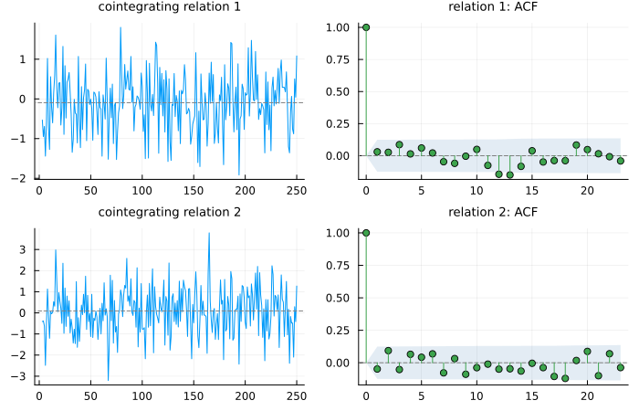

<!DOCTYPE html>
<html lang="en"><head><meta charset="UTF-8"/><meta name="viewport" content="width=device-width, initial-scale=1.0"/><title>Cointegration · TSAnalytics.jl</title><meta name="title" content="Cointegration · TSAnalytics.jl"/><meta property="og:title" content="Cointegration · TSAnalytics.jl"/><meta property="twitter:title" content="Cointegration · TSAnalytics.jl"/><meta name="description" content="Documentation for TSAnalytics.jl."/><meta property="og:description" content="Documentation for TSAnalytics.jl."/><meta property="twitter:description" content="Documentation for TSAnalytics.jl."/><meta property="og:url" content="https://MSALabs.github.io/TSAnalytics.jl/manual/12-cointegration/"/><meta property="twitter:url" content="https://MSALabs.github.io/TSAnalytics.jl/manual/12-cointegration/"/><link rel="canonical" href="https://MSALabs.github.io/TSAnalytics.jl/manual/12-cointegration/"/><script data-outdated-warner src="../../assets/warner.js"></script><link href="https://cdnjs.cloudflare.com/ajax/libs/lato-font/3.0.0/css/lato-font.min.css" rel="stylesheet" type="text/css"/><link href="https://cdnjs.cloudflare.com/ajax/libs/juliamono/0.63.2/juliamono.min.css" rel="stylesheet" type="text/css"/><link href="https://cdnjs.cloudflare.com/ajax/libs/font-awesome/6.4.2/css/fontawesome.min.css" rel="stylesheet" type="text/css"/><link href="https://cdnjs.cloudflare.com/ajax/libs/font-awesome/6.4.2/css/solid.min.css" rel="stylesheet" type="text/css"/><link href="https://cdnjs.cloudflare.com/ajax/libs/font-awesome/6.4.2/css/brands.min.css" rel="stylesheet" type="text/css"/><link href="https://cdnjs.cloudflare.com/ajax/libs/KaTeX/0.16.8/katex.min.css" rel="stylesheet" type="text/css"/><script>documenterBaseURL="../.."</script><script src="https://cdnjs.cloudflare.com/ajax/libs/require.js/2.3.6/require.min.js" data-main="../../assets/documenter.js"></script><script src="../../search_index.js"></script><script src="../../siteinfo.js"></script><script src="../../../versions.js"></script><link class="docs-theme-link" rel="stylesheet" type="text/css" href="../../assets/themes/catppuccin-mocha.css" data-theme-name="catppuccin-mocha"/><link class="docs-theme-link" rel="stylesheet" type="text/css" href="../../assets/themes/catppuccin-macchiato.css" data-theme-name="catppuccin-macchiato"/><link class="docs-theme-link" rel="stylesheet" type="text/css" href="../../assets/themes/catppuccin-frappe.css" data-theme-name="catppuccin-frappe"/><link class="docs-theme-link" rel="stylesheet" type="text/css" href="../../assets/themes/catppuccin-latte.css" data-theme-name="catppuccin-latte"/><link class="docs-theme-link" rel="stylesheet" type="text/css" href="../../assets/themes/documenter-dark.css" data-theme-name="documenter-dark" data-theme-primary-dark/><link class="docs-theme-link" rel="stylesheet" type="text/css" href="../../assets/themes/documenter-light.css" data-theme-name="documenter-light" data-theme-primary/><script src="../../assets/themeswap.js"></script><link href="../../assets/custom.css" rel="stylesheet" type="text/css"/></head><body><div id="documenter"><nav class="docs-sidebar"><div class="docs-package-name"><span class="docs-autofit"><a href="../../">TSAnalytics.jl</a></span></div><button class="docs-search-query input is-rounded is-small is-clickable my-2 mx-auto py-1 px-2" id="documenter-search-query">Search docs (Ctrl + /)</button><ul class="docs-menu"><li><a class="tocitem" href="../../">Home</a></li><li><span class="tocitem">Getting Started</span><ul><li><a class="tocitem" href="../../getting-started/01-installation/">Installation</a></li><li><a class="tocitem" href="../../getting-started/02-first-model/">Your First Model</a></li><li><a class="tocitem" href="../../getting-started/03-was-it-any-good/">Was It Any Good?</a></li><li><a class="tocitem" href="../../getting-started/04-beyond-defaults/">Beyond the Defaults</a></li><li><a class="tocitem" href="../../getting-started/05-where-next/">Where to Go Next</a></li></ul></li><li><span class="tocitem">Manual</span><ul><li><a class="tocitem" href="../01-primitives/">Primitives</a></li><li><a class="tocitem" href="../02-diagnostics/">Diagnostics</a></li><li><a class="tocitem" href="../03-decomposition/">Decomposition</a></li><li><a class="tocitem" href="../04-fitting-arma-models/">Fitting ARMA Models</a></li><li><a class="tocitem" href="../05-automatic-order-selection/">Automatic Order Selection</a></li><li><a class="tocitem" href="../06-garch-and-volatility/">GARCH and Volatility</a></li><li><a class="tocitem" href="../07-state-space-and-kalman/">State Space and the Kalman Filter</a></li><li><a class="tocitem" href="../08-arimax-and-regression/">ARIMAX and Regression with ARIMA Errors</a></li><li><a class="tocitem" href="../09-forecasting-and-accuracy/">Forecasting and Accuracy</a></li><li><a class="tocitem" href="../10-exponential-smoothing/">Exponential Smoothing, ETS, Theta and TBATS</a></li><li><a class="tocitem" href="../11-vector-autoregression/">Vector Autoregression</a></li><li class="is-active"><a class="tocitem" href>Cointegration</a><ul class="internal"><li><a class="tocitem" href="#Engle-Granger:-regress,-then-test-the-residual"><span>Engle-Granger: regress, then test the residual</span></a></li><li><a class="tocitem" href="#Phillips-Ouliaris:-the-residual-based-tests-that-are-invariant"><span>Phillips-Ouliaris: the residual-based tests that are invariant</span></a></li><li><a class="tocitem" href="#Johansen:-how-many-relations?"><span>Johansen: how many relations?</span></a></li><li><a class="tocitem" href="#The-VECM:-modelling-the-system-you-found"><span>The VECM: modelling the system you found</span></a></li><li><a class="tocitem" href="#Which-test-to-use"><span>Which test to use</span></a></li><li><a class="tocitem" href="#See-also"><span>See also</span></a></li></ul></li><li><a class="tocitem" href="../13-plotting/">Plotting</a></li><li><a class="tocitem" href="../14-coming-from-r-python/">Coming from R or Python</a></li></ul></li><li><span class="tocitem">Introduction to Time Series Analysis</span><ul><li><input class="collapse-toggle" id="menuitem-4-1" type="checkbox"/><label class="tocitem" for="menuitem-4-1"><span class="docs-label">Part I – The Series and the Machine</span><i class="docs-chevron"></i></label><ul class="collapsed"><li><a class="tocitem" href="../../introduction/01-why-model-a-time-series/">Why Model a Time Series?</a></li><li><a class="tocitem" href="../../introduction/02-what-a-time-series-is/">What a Time Series Is</a></li><li><a class="tocitem" href="../../introduction/03-differencing-and-integration/">Differencing and Integration</a></li><li><a class="tocitem" href="../../introduction/04-filters-and-moving-averages/">Filters and Moving Averages</a></li><li><a class="tocitem" href="../../introduction/05-autocorrelation/">Autocorrelation</a></li><li><a class="tocitem" href="../../introduction/06-the-frequency-domain/">The Frequency Domain</a></li><li><a class="tocitem" href="../../introduction/07-transformations/">Transformations</a></li></ul></li><li><input class="collapse-toggle" id="menuitem-4-2" type="checkbox"/><label class="tocitem" for="menuitem-4-2"><span class="docs-label">Part II – Interrogating a Series</span><i class="docs-chevron"></i></label><ul class="collapsed"><li><a class="tocitem" href="../../introduction/08-stationarity/">Stationarity</a></li><li><a class="tocitem" href="../../introduction/09-testing-for-unit-roots/">Testing for Unit Roots</a></li><li><a class="tocitem" href="../../introduction/10-testing-the-residuals/">Testing the Residuals</a></li><li><a class="tocitem" href="../../introduction/11-testing-distribution-and-variance/">Testing Distribution and Variance</a></li><li><a class="tocitem" href="../../introduction/12-the-diagnostic-panel/">The Diagnostic Panel</a></li></ul></li><li><input class="collapse-toggle" id="menuitem-4-3" type="checkbox"/><label class="tocitem" for="menuitem-4-3"><span class="docs-label">Part III – Pulling a Series Apart</span><i class="docs-chevron"></i></label><ul class="collapsed"><li><a class="tocitem" href="../../introduction/13-components/">Components</a></li><li><a class="tocitem" href="../../introduction/14-classical-decomposition/">Classical Decomposition</a></li><li><a class="tocitem" href="../../introduction/15-stl/">STL</a></li><li><a class="tocitem" href="../../introduction/16-multiple-seasonality/">Multiple Seasonality</a></li></ul></li><li><input class="collapse-toggle" id="menuitem-4-4" type="checkbox"/><label class="tocitem" for="menuitem-4-4"><span class="docs-label">Part IV – Models That Remember</span><i class="docs-chevron"></i></label><ul class="collapsed"><li><a class="tocitem" href="../../introduction/17-ar-and-ma-processes/">AR and MA Processes</a></li><li><a class="tocitem" href="../../introduction/18-fitting-arma/">Fitting ARMA</a></li><li><a class="tocitem" href="../../introduction/19-arima/">ARIMA</a></li><li><a class="tocitem" href="../../introduction/20-seasonal-arima/">Seasonal ARIMA</a></li><li><a class="tocitem" href="../../introduction/21-choosing-an-order/">Choosing an Order Automatically</a></li><li><a class="tocitem" href="../../introduction/22-forecasting/">Forecasting</a></li><li><a class="tocitem" href="../../introduction/23-evaluating-honestly/">Evaluating Honestly</a></li></ul></li><li><input class="collapse-toggle" id="menuitem-4-5" type="checkbox"/><label class="tocitem" for="menuitem-4-5"><span class="docs-label">Part V – Models That Get Turbulent</span><i class="docs-chevron"></i></label><ul class="collapsed"><li><a class="tocitem" href="../../introduction/24-why-variance-changes/">Why Variance Changes</a></li><li><a class="tocitem" href="../../introduction/25-arch-and-garch/">ARCH and GARCH</a></li><li><a class="tocitem" href="../../introduction/26-asymmetry/">Asymmetry</a></li><li><a class="tocitem" href="../../introduction/27-forecasting-volatility/">Forecasting Volatility</a></li><li><a class="tocitem" href="../../introduction/28-realized-measures/">Realized Measures</a></li></ul></li><li><input class="collapse-toggle" id="menuitem-4-6" type="checkbox"/><label class="tocitem" for="menuitem-4-6"><span class="docs-label">Part VI – The Machinery Underneath</span><i class="docs-chevron"></i></label><ul class="collapsed"><li><a class="tocitem" href="../../introduction/29-the-state-space-form/">The State Space Form</a></li><li><a class="tocitem" href="../../introduction/30-the-kalman-filter/">The Kalman Filter</a></li><li><a class="tocitem" href="../../introduction/31-smoothing/">Smoothing</a></li><li><a class="tocitem" href="../../introduction/32-time-varying-systems/">Time-Varying Systems</a></li><li><a class="tocitem" href="../../introduction/33-diffuse-initialisation/">Diffuse Initialisation</a></li></ul></li><li><input class="collapse-toggle" id="menuitem-4-7" type="checkbox"/><label class="tocitem" for="menuitem-4-7"><span class="docs-label">Part VII – Bringing in Outside Information</span><i class="docs-chevron"></i></label><ul class="collapsed"><li><a class="tocitem" href="../../introduction/34-regression-with-arima-errors/">Regression with ARIMA Errors</a></li><li><a class="tocitem" href="../../introduction/35-coefficients-that-drift/">Coefficients That Drift</a></li><li><a class="tocitem" href="../../introduction/36-calendar-effects/">Calendar Effects</a></li><li><a class="tocitem" href="../../introduction/37-autoregressive-errors-with-changing-variance/">Autoregressive Errors with Changing Variance</a></li></ul></li><li><input class="collapse-toggle" id="menuitem-4-8" type="checkbox"/><label class="tocitem" for="menuitem-4-8"><span class="docs-label">Part VIII – What Statistical Agencies Do</span><i class="docs-chevron"></i></label><ul class="collapsed"><li><a class="tocitem" href="../../introduction/38-official-seasonal-adjustment/">Official Seasonal Adjustment</a></li><li><a class="tocitem" href="../../introduction/39-x13-from-julia/">X-13 from Julia</a></li><li><a class="tocitem" href="../../introduction/40-adjusting-an-indian-series/">Adjusting an Indian Series</a></li></ul></li><li><input class="collapse-toggle" id="menuitem-4-9" type="checkbox"/><label class="tocitem" for="menuitem-4-9"><span class="docs-label">Part IX – The Frontier</span><i class="docs-chevron"></i></label><ul class="collapsed"><li><a class="tocitem" href="../../introduction/41-the-frontier/">The Frontier</a></li></ul></li><li><input class="collapse-toggle" id="menuitem-4-10" type="checkbox"/><label class="tocitem" for="menuitem-4-10"><span class="docs-label">Appendices</span><i class="docs-chevron"></i></label><ul class="collapsed"><li><a class="tocitem" href="../../introduction/A-checklist/">Appendix A: Diagnostic Checklist</a></li><li><a class="tocitem" href="../../introduction/B-verification/">Appendix B: Verification</a></li><li><a class="tocitem" href="../../introduction/C-further-reading/">Further Reading</a></li></ul></li></ul></li><li><span class="tocitem">API Reference</span><ul><li><a class="tocitem" href="../../api/primitives/">API: Primitives</a></li><li><a class="tocitem" href="../../api/diagnostics/">API: Diagnostics</a></li><li><a class="tocitem" href="../../api/decomposition/">API: Decomposition</a></li><li><a class="tocitem" href="../../api/arma-models/">API: ARMA Models</a></li><li><a class="tocitem" href="../../api/garch/">API: GARCH and Volatility</a></li><li><a class="tocitem" href="../../api/state-space/">API: State Space and the Kalman Filter</a></li><li><a class="tocitem" href="../../api/arimax/">API: ARIMAX and Regression with ARIMA Errors</a></li><li><a class="tocitem" href="../../api/multivariate/">API: Multivariate</a></li><li><a class="tocitem" href="../../api/forecasting/">API: Forecasting and Accuracy</a></li><li><a class="tocitem" href="../../api/plotting/">API: Plotting</a></li></ul></li></ul><div class="docs-version-selector field has-addons"><div class="control"><span class="docs-label button is-static is-size-7">Version</span></div><div class="docs-selector control is-expanded"><div class="select is-fullwidth is-size-7"><select id="documenter-version-selector"></select></div></div></div></nav><div class="docs-main"><header class="docs-navbar"><a class="docs-sidebar-button docs-navbar-link fa-solid fa-bars is-hidden-desktop" id="documenter-sidebar-button" href="#"></a><nav class="breadcrumb"><ul class="is-hidden-mobile"><li><a class="is-disabled">Manual</a></li><li class="is-active"><a href>Cointegration</a></li></ul><ul class="is-hidden-tablet"><li class="is-active"><a href>Cointegration</a></li></ul></nav><div class="docs-right"><a class="docs-navbar-link" href="https://github.com/MSALabs/TSAnalytics.jl" title="View the repository on GitHub"><span class="docs-icon fa-brands"></span><span class="docs-label is-hidden-touch">GitHub</span></a><a class="docs-navbar-link" href="https://github.com/MSALabs/TSAnalytics.jl/blob/main/docs/src/manual/12-cointegration.md" title="Edit source on GitHub"><span class="docs-icon fa-solid"></span></a><a class="docs-settings-button docs-navbar-link fa-solid fa-gear" id="documenter-settings-button" href="#" title="Settings"></a><a class="docs-article-toggle-button fa-solid fa-chevron-up" id="documenter-article-toggle-button" href="javascript:;" title="Collapse all docstrings"></a></div></header><article class="content" id="documenter-page"><h1 id="Cointegration"><a class="docs-heading-anchor" href="#Cointegration">Cointegration</a><a id="Cointegration-1"></a><a class="docs-heading-anchor-permalink" href="#Cointegration" title="Permalink"></a></h1><p>Two random walks wander. Usually they wander independently, and a regression of one on the other finds a &quot;relationship&quot; that is nothing but two trends — Granger and Newbold&#39;s spurious regression. Sometimes, though, some linear combination of them does <strong>not</strong> wander: consumption and income, a spot and a futures price, two yields on the same curve. Those series are <strong>cointegrated</strong>, and the stationary combination is an equilibrium the system keeps returning to.</p><p>This chapter covers the three ways this package tests for that, and what each one is for. The examples use simulated series whose answer is known:</p><pre><code class="language-julia hljs">using TSAnalytics, DelimitedFiles
fx(name) = readdlm(joinpath(pkgdir(TSAnalytics), &quot;test&quot;, &quot;fixtures&quot;, &quot;var&quot;, name), &#39;,&#39;; skipstart=1)

yes = fx(&quot;coint2_yes.csv&quot;)   # x a random walk, z = 2 + 1.5x + stationary noise
no  = fx(&quot;coint2_no.csv&quot;)    # two independent random walks
r1  = fx(&quot;coint3_r1.csv&quot;)    # three series, one cointegrating relation
r2  = fx(&quot;coint3_r2.csv&quot;)    # three series sharing one trend: two relations</code></pre><h2 id="Engle-Granger:-regress,-then-test-the-residual"><a class="docs-heading-anchor" href="#Engle-Granger:-regress,-then-test-the-residual">Engle-Granger: regress, then test the residual</a><a id="Engle-Granger:-regress,-then-test-the-residual-1"></a><a class="docs-heading-anchor-permalink" href="#Engle-Granger:-regress,-then-test-the-residual" title="Permalink"></a></h2><p>The oldest test is two steps: regress one series on the others, then ask whether the residual has a unit root. <a href="../../api/multivariate/#TSAnalytics.coint_test"><code>coint_test</code></a> does exactly that, running <a href="../../api/diagnostics/#TSAnalytics.adf_test"><code>adf_test</code></a> on the residual, and reports MacKinnon&#39;s response-surface p-value for the cointegration case:</p><pre><code class="language-julia hljs">coint_test(yes[:, [2, 1]]; lags = 4, autolag = nothing)</code></pre><pre class="documenter-example-output"><code class="nohighlight hljs ansi">Engle-Granger cointegration test (null: no cointegration)
  series (N)          : 2   first column is the dependent variable
  trend               : const
  ADF lags            : 4 (fixed)
  n                   : 250
  test statistic      : -5.3486
  critical values     : 1%: -3.941, 5%: -3.3608, 10%: -3.0615
  p-value             : 3.5805e-5</code></pre><pre><code class="language-julia hljs">round(pvalue(coint_test(no; lags = 4, autolag = nothing)); digits = 3)</code></pre><pre class="documenter-example-output"><code class="nohighlight hljs ansi">0.842</code></pre><p>Two things to know before relying on it.</p><p><strong>The first column is special.</strong> It is the dependent variable of the first-step regression, and the test is not symmetric: put the series first that you would normalize the relation on.</p><p><strong>Pass the lag if you want to reproduce a number.</strong> At a fixed lag the statistic agrees exactly with both references. With automatic selection, <code>statsmodels</code> and an R implementation built from <code>urca::ur.df</code> search differently and land on different lags; this package uses <a href="../../api/diagnostics/#TSAnalytics.adf_test"><code>adf_test</code></a>&#39;s search, which is <code>statsmodels</code>&#39;.</p><p>MacKinnon&#39;s p-value surfaces cover at most six series. For seven to twelve, <code>coint_test</code> returns critical values and <code>pvalue</code> refuses by name; beyond twelve nothing is tabulated and the test is refused.</p><h2 id="Phillips-Ouliaris:-the-residual-based-tests-that-are-invariant"><a class="docs-heading-anchor" href="#Phillips-Ouliaris:-the-residual-based-tests-that-are-invariant">Phillips-Ouliaris: the residual-based tests that are invariant</a><a id="Phillips-Ouliaris:-the-residual-based-tests-that-are-invariant-1"></a><a class="docs-heading-anchor-permalink" href="#Phillips-Ouliaris:-the-residual-based-tests-that-are-invariant" title="Permalink"></a></h2><p>Phillips &amp; Ouliaris (1990) proposed two alternatives built on long-run covariances. <a href="../../api/multivariate/#TSAnalytics.phillips_ouliaris_test"><code>phillips_ouliaris_test</code></a> with <code>kind = :Pz</code> — the default — is the useful one: a trace statistic that does not single out any series, so the column order no longer matters.</p><pre><code class="language-julia hljs">t = phillips_ouliaris_test(r1)</code></pre><pre class="documenter-example-output"><code class="nohighlight hljs ansi">Phillips-Ouliaris cointegration test, Pz (trace, normalization-invariant)
  null                : no cointegration (a large value rejects)
  series (m)          : 3
  deterministic       : constant (demeaned)
  bandwidth           : 5
  n                   : 250
  test statistic      : 241.4801
  critical values     : 10%: 80.2034, 5%: 89.7619, 1%: 109.4525   (Phillips &amp; Ouliaris 1990; no p-value)</code></pre><pre><code class="language-julia hljs">reject(t; level = 1.0), reject(phillips_ouliaris_test(no); level = 10.0)</code></pre><pre class="documenter-example-output"><code class="nohighlight hljs ansi">(true, false)</code></pre><p>There is no p-value, only the paper&#39;s critical values; <a href="../../api/multivariate/#TSAnalytics.reject"><code>reject</code></a> compares in the right direction, which matters because a <strong>large</strong> Phillips-Ouliaris statistic rejects while a <strong>small</strong> Engle-Granger one does.</p><p>The <code>deterministic</code> choice changes conclusions, not decimals. On a pair whose equilibrium itself contains a trend, the variance-ratio statistic <code>Pu</code> goes from no rejection to rejection at 1% as the trend is allowed for:</p><pre><code class="language-julia hljs">tr = fx(&quot;coint2_trend.csv&quot;)
[round(phillips_ouliaris_test(tr; kind = :Pu, deterministic = d).statistic; digits = 2)
 for d in (:none, :const, :trend)]</code></pre><pre class="documenter-example-output"><code class="nohighlight hljs ansi">3-element Vector{Float64}:
   3.19
  50.24
 170.02</code></pre><div class="admonition is-info" id="This-package-follows-the-paper-where-urca-does-not-916871c92b2c02b"><header class="admonition-header">This package follows the paper where `urca` does not<a class="admonition-anchor" href="#This-package-follows-the-paper-where-urca-does-not-916871c92b2c02b" title="Permalink"></a></header><div class="admonition-body"><p>With a constant or trend, <code>Pz</code> is built from demeaned (or detrended) data, as Phillips &amp; Ouliaris specify and as their tables assume. <code>urca::ca.po</code> uses the raw levels; its statistic changes when a constant is added to the data, and under the null it almost never rejects. <code>Pu</code>, and <code>Pz</code> without deterministic terms, agree with <code>ca.po</code> to <code>1e-10</code>.</p></div></div><h2 id="Johansen:-how-many-relations?"><a class="docs-heading-anchor" href="#Johansen:-how-many-relations?">Johansen: how many relations?</a><a id="Johansen:-how-many-relations?-1"></a><a class="docs-heading-anchor-permalink" href="#Johansen:-how-many-relations?" title="Permalink"></a></h2><p>The residual-based tests answer &quot;is there cointegration?&quot;. With more than two series the better question is &quot;how much?&quot; — three series can share one, two or no relations. Johansen&#39;s procedure answers it with a sequence of likelihood-ratio tests, one per candidate rank:</p><pre><code class="language-julia hljs">j = johansen_test(r2; lags = 1)</code></pre><pre class="documenter-example-output"><code class="nohighlight hljs ansi">Johansen cointegration rank tests (null: rank &lt;= r)
  series (K)          : 3   (y1, y2, y3)
  differenced lags    : 1
  deterministic       : unrestricted constant (Table 1)
  T                   : 248
  r    trace      10%      5%      1%     max-eig    10%      5%      1%
  0    195.893   26.79   29.68   35.65    102.733    18.6   20.97   25.52
  1      93.16   13.33   15.41   20.04     92.647   12.07   14.07   18.63
  2      0.514    2.69    3.76    6.65      0.514    2.69    3.76    6.65
  critical values: Osterwald-Lenum (1992); no p-value. rank (trace, 5%): 2</code></pre><p><a href="../../api/multivariate/#TSAnalytics.coint_rank"><code>coint_rank</code></a> runs the sequence — test <code>rank ≤ 0</code>, then <code>≤ 1</code>, …, and stop at the first hypothesis not rejected:</p><pre><code class="language-julia hljs">coint_rank(johansen_test(r1; lags = 1)), coint_rank(j), coint_rank(johansen_test(no; lags = 1))</code></pre><pre class="documenter-example-output"><code class="nohighlight hljs ansi">(1, 2, 0)</code></pre><p>One, two and none: the three designs, recovered.</p><p><a href="../../api/plotting/#TSAnalytics.cointegration_plot"><code>cointegration_plot</code></a> shows what was found: each estimated relation <code>β&#39;y</code> over time. A real equilibrium wanders around a fixed level and keeps coming back.</p><pre><code class="language-julia hljs">using Plots
plot(cointegration_plot(r2, j); size = (700, 450))</code></pre><h3 id="lags-counts-differenced-lags"><a class="docs-heading-anchor" href="#lags-counts-differenced-lags"><code>lags</code> counts differenced lags</a><a id="lags-counts-differenced-lags-1"></a><a class="docs-heading-anchor-permalink" href="#lags-counts-differenced-lags" title="Permalink"></a></h3><p><code>lags</code> is the number of lagged <strong>differences</strong> in the error-correction form — <code>statsmodels</code>&#39; <code>k_ar_diff</code>. <code>urca</code> counts the levels VAR&#39;s order instead, so its <code>K = 2</code> is <code>lags = 1</code> here. It is required: there is no safe default.</p><h3 id="Deterministic-terms:-read-the-table,-not-the-names"><a class="docs-heading-anchor" href="#Deterministic-terms:-read-the-table,-not-the-names">Deterministic terms: read the table, not the names</a><a id="Deterministic-terms:-read-the-table,-not-the-names-1"></a><a class="docs-heading-anchor-permalink" href="#Deterministic-terms:-read-the-table,-not-the-names" title="Permalink"></a></h3><table><tr><th style="text-align: right"><code>deterministic</code></th><th style="text-align: right">meaning</th><th style="text-align: right"><code>urca</code></th><th style="text-align: right"><code>statsmodels</code></th></tr><tr><td style="text-align: right"><code>:none</code></td><td style="text-align: right">nothing</td><td style="text-align: right">—</td><td style="text-align: right"><code>det_order = -1</code></td></tr><tr><td style="text-align: right"><code>:const</code></td><td style="text-align: right">unrestricted constant (the data drift)</td><td style="text-align: right"><code>ecdet = &quot;none&quot;</code></td><td style="text-align: right"><code>det_order = 0</code></td></tr><tr><td style="text-align: right"><code>:const_restricted</code></td><td style="text-align: right">constant only inside the relation</td><td style="text-align: right"><code>ecdet = &quot;const&quot;</code></td><td style="text-align: right">—</td></tr><tr><td style="text-align: right"><code>:trend</code></td><td style="text-align: right">unrestricted constant and trend</td><td style="text-align: right">—</td><td style="text-align: right">—</td></tr><tr><td style="text-align: right"><code>:trend_restricted</code></td><td style="text-align: right">trend only inside the relation</td><td style="text-align: right"><code>ecdet = &quot;trend&quot;</code></td><td style="text-align: right">—</td></tr></table><p><code>urca</code>&#39;s <code>ecdet = &quot;none&quot;</code> is the single most common source of confusion: it still fits a constant, just not inside the cointegrating relation. It is <code>:const</code>.</p><h3 id="Critical-values,-and-the-one-place-this-disagrees-with-urca"><a class="docs-heading-anchor" href="#Critical-values,-and-the-one-place-this-disagrees-with-urca">Critical values, and the one place this disagrees with <code>urca</code></a><a id="Critical-values,-and-the-one-place-this-disagrees-with-urca-1"></a><a class="docs-heading-anchor-permalink" href="#Critical-values,-and-the-one-place-this-disagrees-with-urca" title="Permalink"></a></h3><p>There is no p-value — the tables are quantiles (Osterwald-Lenum 1992), and <a href="../../api/multivariate/#TSAnalytics.critical_values"><code>critical_values</code></a> returns them. Each deterministic case uses the table the paper assigns it. For <code>:const</code> that is Table 1, which <code>statsmodels</code>&#39; own simulations agree with; <code>urca</code> uses Table 1.1*, a side case where the data have no drift, and reports larger critical values. The test statistics themselves agree with both references to <code>1e-10</code>.</p><h3 id="The-cointegrating-vectors"><a class="docs-heading-anchor" href="#The-cointegrating-vectors">The cointegrating vectors</a><a id="The-cointegrating-vectors-1"></a><a class="docs-heading-anchor-permalink" href="#The-cointegrating-vectors" title="Permalink"></a></h3><p>The eigenvectors are only defined up to scale, so <a href="../../api/multivariate/#TSAnalytics.normalize_beta"><code>normalize_beta</code></a> puts them in a conventional form — first element one (<code>urca</code>&#39;s <code>V</code>), or an identity block (<code>cajorls</code>):</p><pre><code class="language-julia hljs">round.(normalize_beta(j, 2; scheme = :identity); digits = 3)</code></pre><pre class="documenter-example-output"><code class="nohighlight hljs ansi">3×2 Matrix{Float64}:
 1.0    -0.0
 0.0     1.0
 1.006   1.991</code></pre><p><code>r2</code>&#39;s design has relations <code>d₁ + d₃</code> and <code>d₂ + 2d₃</code>, and the third row recovers <code>(1, 2)</code>. Beyond the true rank the extra vectors are still returned, but they mean no more than the rank you asserted.</p><h2 id="The-VECM:-modelling-the-system-you-found"><a class="docs-heading-anchor" href="#The-VECM:-modelling-the-system-you-found">The VECM: modelling the system you found</a><a id="The-VECM:-modelling-the-system-you-found-1"></a><a class="docs-heading-anchor-permalink" href="#The-VECM:-modelling-the-system-you-found" title="Permalink"></a></h2><p>Once the rank is known, <a href="../../api/multivariate/#TSAnalytics.fit_vecm"><code>fit_vecm</code></a> estimates the error-correction model it implies,</p><p class="math-container">\[\Delta y_t = lpha eta&#39; y_{t-1} + \Gamma_1 \Delta y_{t-1} + \dots + \Gamma_k \Delta y_{t-k} + \mu + u_t\]</p><p>where <code>β&#39; y_{t-1}</code> is how far the system is from its equilibria and <code>α</code> how fast each series moves back:</p><pre><code class="language-julia hljs">v = fit_vecm(r1; lags = 1, rank = 1)</code></pre><pre class="documenter-example-output"><code class="nohighlight hljs ansi">VECM  K=3  rank=1  differenced lags=1  T=248  method=:ml
  variables: y1, y2, y3
  deterministic: unrestricted constant (Table 1)
  beta[1] = (1.0, -0.496505, -0.97773)
  logLik = -907.0573   AIC = 1848.1146   BIC = 1907.8429</code></pre><pre><code class="language-julia hljs">round.(vec(v.alpha); digits = 3)</code></pre><pre class="documenter-example-output"><code class="nohighlight hljs ansi">3-element Vector{Float64}:
  0.037
 -0.234
  0.961</code></pre><p>The third series does almost all of the adjusting; the first two barely respond to the disequilibrium. Use the same <code>deterministic</code> as the Johansen test that chose the rank — the vocabulary is shared so that the two cannot silently refer to different models, and they give the same <code>β</code>.</p><p><code>method = :ml</code> (the default) is Johansen&#39;s maximum likelihood, what all three references compute. <code>method = :twostep</code> is Engle and Granger&#39;s static-regression estimator: consistent but less efficient, rank 1 only, and a different number — not a normalization of the same one.</p><p>Forecasts and impulse responses come from the model written as a VAR in levels, <a href="../../api/multivariate/#TSAnalytics.var_rep"><code>var_rep</code></a>, through the same recursions as <a href="../../api/multivariate/#TSAnalytics.fit_var"><code>fit_var</code></a>&#39;s. That VAR has unit roots <strong>by construction</strong> — that is what cointegration means — so its forecasts&#39; intervals keep widening, its impulse responses settle at a permanent effect instead of dying out, and <a href="../../api/multivariate/#TSAnalytics.lr_effects"><code>lr_effects</code></a> refuses it.</p><h2 id="Which-test-to-use"><a class="docs-heading-anchor" href="#Which-test-to-use">Which test to use</a><a id="Which-test-to-use-1"></a><a class="docs-heading-anchor-permalink" href="#Which-test-to-use" title="Permalink"></a></h2><ul><li><strong>Two series, a natural dependent variable:</strong> <a href="../../api/multivariate/#TSAnalytics.coint_test"><code>coint_test</code></a> — simple, and it has a p-value.</li><li><strong>Two to six series, no natural normalization:</strong> <a href="../../api/multivariate/#TSAnalytics.phillips_ouliaris_test"><code>phillips_ouliaris_test</code></a> with <code>kind = :Pz</code>.</li><li><strong>More than two series, or you need the number of relations and the vectors themselves:</strong> <a href="../../api/multivariate/#TSAnalytics.johansen_test"><code>johansen_test</code></a>, then <a href="../../api/multivariate/#TSAnalytics.fit_vecm"><code>fit_vecm</code></a> at the rank it chooses.</li></ul><p>All three test the null of <strong>no</strong> cointegration. Failing to reject is not evidence for it; tests of the reverse null exist but behave badly, for reasons Phillips &amp; Ouliaris (1990, §6) set out.</p><h2 id="See-also"><a class="docs-heading-anchor" href="#See-also">See also</a><a id="See-also-1"></a><a class="docs-heading-anchor-permalink" href="#See-also" title="Permalink"></a></h2><ul><li><a href="../11-vector-autoregression/">Vector Autoregression</a> — the stationary case</li><li><a href="../14-coming-from-r-python/">Coming from R or Python</a> — the reference divergences in one place</li><li><a href="../../api/multivariate/">API: Multivariate</a></li></ul></article><nav class="docs-footer"><a class="docs-footer-prevpage" href="../11-vector-autoregression/">« Vector Autoregression</a><a class="docs-footer-nextpage" href="../13-plotting/">Plotting »</a><div class="flexbox-break"></div><p class="footer-message">Powered by <a href="https://github.com/JuliaDocs/Documenter.jl">Documenter.jl</a> and the <a href="https://julialang.org/">Julia Programming Language</a>.</p></nav></div><div class="modal" id="documenter-settings"><div class="modal-background"></div><div class="modal-card"><header class="modal-card-head"><p class="modal-card-title">Settings</p><button class="delete"></button></header><section class="modal-card-body"><p><label class="label">Theme</label><div class="select"><select id="documenter-themepicker"><option value="auto">Automatic (OS)</option><option value="documenter-light">documenter-light</option><option value="documenter-dark">documenter-dark</option><option value="catppuccin-latte">catppuccin-latte</option><option value="catppuccin-frappe">catppuccin-frappe</option><option value="catppuccin-macchiato">catppuccin-macchiato</option><option value="catppuccin-mocha">catppuccin-mocha</option></select></div></p><hr/><p>This document was generated with <a href="https://github.com/JuliaDocs/Documenter.jl">Documenter.jl</a> version 1.19.0 on <span class="colophon-date" title="Wednesday 14 October 2026 04:40">Wednesday 14 October 2026</span>. Using Julia version 1.13.1.</p></section><footer class="modal-card-foot"></footer></div></div></div></body></html>
